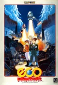
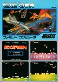
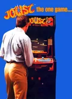
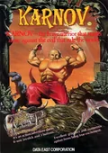
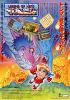
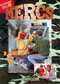
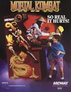

Marca cada prueba al hacerla. Se guarda en este móvil. Al acabar, pulsa Enviar resultados y pégamelos.
0 de 11 hechas
Juegos (11)
1

Eco Fighters
botones nuevos (2026-11-17): B dispara (mantenido, carga el disparo), A gira el cañón a un lado y R al otro, L suelta el disparo cargado. Antes (de serie en FinalBurn Neo) R disparaba y B y A giraban.
Botones
Disparar (mantenido: cargar el disparo; con una mejora, la potencia)
Girar el cañón hacia un lado ⚠️
Girar el cañón hacia el otro ⚠️
Soltar el disparo cargado ⚠️
Empezar
Meter una moneda
+
Salir del juego
2

Exerion
que el marco ya no tape el juego (2026-11-17: se ha puesto el tamaño de imagen de los juegos verticales).
Botones
Disparo doble
Disparo simple
Empezar
Meter una moneda
+
Salir del juego
3
JoJo's Bizarre Adventure: Heritage for the Future
⚠️ con los botones de serie de FinalBurn Neo (como Street Fighter III, de la misma placa), los ataques deberían ir arriba (Y X L) y el Stand en B: comprobarlo.
Botones
Invocar o retirar el Stand ⚠️
Atacar flojo ⚠️
Atacar medio ⚠️
Atacar fuerte ⚠️
Empezar
Meter una moneda
+
Salir del juego
4

Joust
🔁 Pasado de MAME 2003 a FinalBurn Neo el 2026-11-17: comprobar que arranca, la velocidad, el sonido y los botones de la tabla. A la copia le faltan chips PAL o PROM que FinalBurn Neo no suele necesitar.
Botones
Aletear (pulsar una y otra vez para volar)
Empezar
Meter una moneda
+
Salir del juego
5

Karnov
🔄 Desde RetroPie 4.8 se juega con FB Alpha 2012, porque FinalBurn Neo no lo arranca con esta copia (por SSH arrancó sin echar nada en falta): comprobar que arranca, la velocidad, el sonido y los botones de la tabla.
Que arranque y que los botones hagan lo de la tabla.
Botones
Atacar
Saltar
Ataque especial ⚠️
Elegir y usar objeto ⚠️
Empezar
Meter una moneda
+
Salir del juego
7

Legend of Hero Tonma
🔄 Desde RetroPie 4.8 se juega con FB Alpha 2012, porque FinalBurn Neo no lo arranca con esta copia (por SSH arrancó sin echar nada en falta): comprobar que arranca, la velocidad, el sonido y los botones de la tabla. A dos jugadores, que el J2 juegue su turno con sus propios mandos y que la pantalla no se dé la vuelta.
Que arranque y que los botones hagan lo de la tabla.
Botones
Dar una patada floja
Dar una patada media
Dar una patada fuerte
Dar un puñetazo flojo
Dar un puñetazo medio
Dar un puñetazo fuerte
Empezar
Meter una moneda
+
Salir del juego
9

Mercs
🔁 Pasado de MAME 2003 a FinalBurn Neo el 2026-11-17: comprobar que arranca, la velocidad, el sonido y los botones de la tabla. A la copia le faltan chips PAL o PROM que FinalBurn Neo no suele necesitar.
Botones
Disparar ⚠️
Lanzar una bomba ⚠️
Empezar (jugador 1)
Meter una moneda
Meter una moneda y empezar (jugador 2)
+
Salir del juego
10

Mortal Kombat
🔁 Pasado de MAME 2003 a FinalBurn Neo el 2026-11-17: comprobar que arranca, la velocidad, el sonido y los botones de la tabla (con MAME se probó bien y L bloqueaba; en FinalBurn Neo el orden de los botones puede ser otro).
🔁 Pasado de MAME 2003 a FinalBurn Neo el 2026-11-17: comprobar que arranca, la velocidad, el sonido y los botones de la tabla (con MAME se probó bien y L bloqueaba; en FinalBurn Neo el orden de los botones puede ser otro).